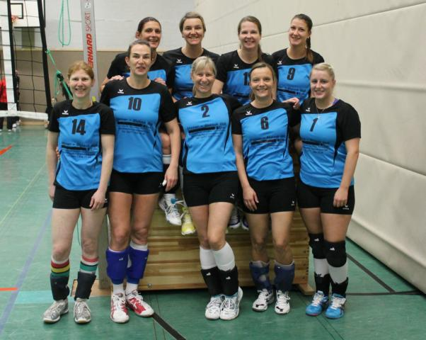

2. Volleyball Damen des ESCG verkürzen in der Bezirksliga den Abstand zum gesicherten Mittelfeld

In eigener Halle traf das junge ESCG Team auf die Mannschaften von Grün – Weiß Beckedorf und der SG Beverstedt. Um den Anschluss an das gesicherte Mittelfeld zu halten war ein Sieg gegen Beckedorf Pflicht.